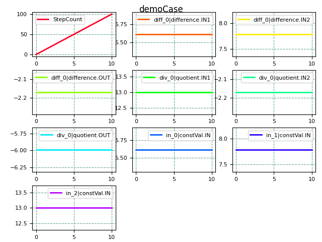

watchDict#
Description#
A watchDict is a file in dictIO dict file format used with watchCosim.
Normally there is no need to write a watchDict manually. The watchDict file is created by opsCaseBuilder during its build process. This default watchDict file already covers all information from the involved fmu’s. However, where needed in advanced cases you can certainly reduce or adjust the automatically generated watchDict afterwards manually (or by a user defined tool / process).
The watchDict file serves as configuration for watchCosim, allowing to
monitor the progress of a running cosim simulation
show a self defined convergence plot on the screen and save the image
write a statistical summary of the results (as defined in watchDict and as far as the simulation has progressed).
Elements#
element / key |
type |
Description |
|---|---|---|
datasources |
dict |
{all, any, none} names of the involved fmu’s |
<FMU> |
dict |
key matching the name of an FMU to be monitored (without file extension) |
columns |
list[int] |
columns as they are written in <FMU>_DATETIME.csv (sub-setting and ordering is free-of-choice) |
delimiter |
string |
the type of delimiter in <FMU>_DATETIME.csv |
simulation |
dict |
additional information about the monitored simulaton. Used for window decoration. |
name |
string |
name of the monitored simulation |
Example#

Below example shows a typical watchDict file.
/*---------------------------------*- C++ -*----------------------------------*\
filetype dictionary; coding utf-8; version 0.1; local --; purpose --;
\*----------------------------------------------------------------------------*/
datasources
{
myfmu
{
columns
(
0 1 2 3 4
);
}
}
delimiter ,;
simulation
{
name demoCase;
}